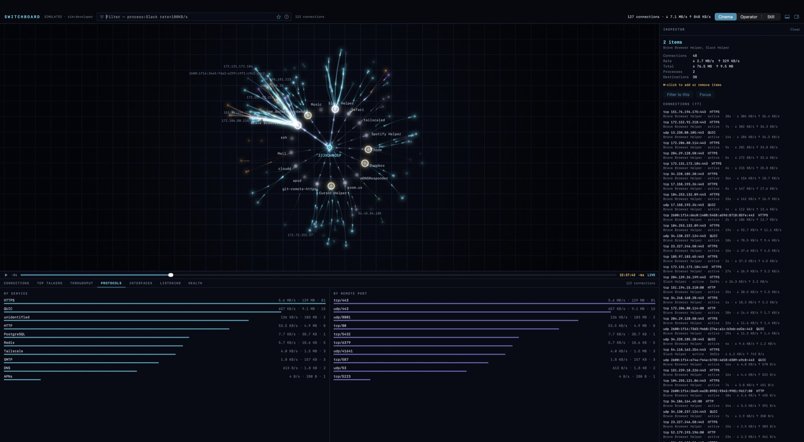
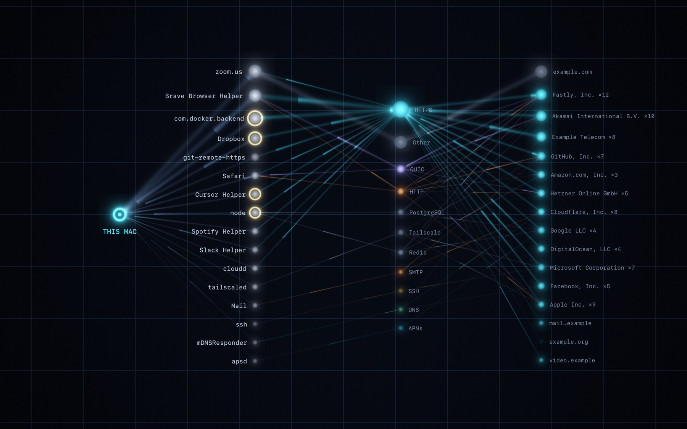
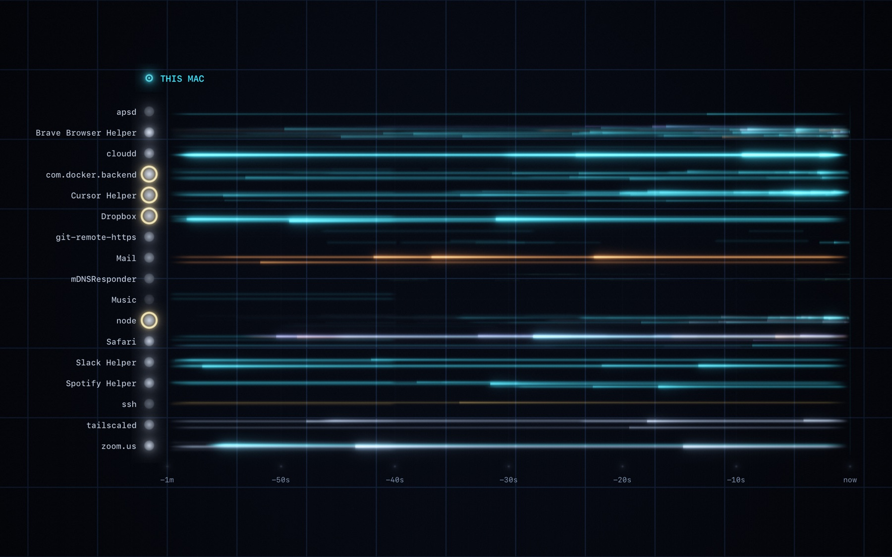
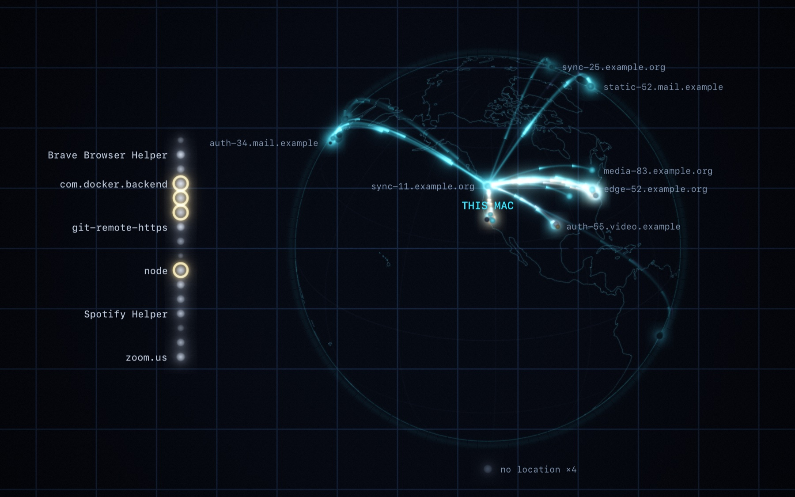
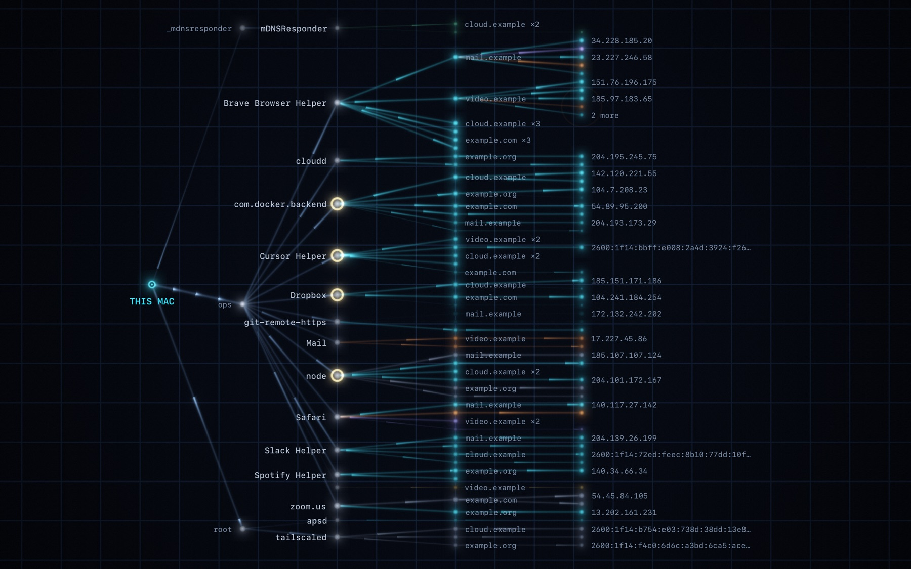
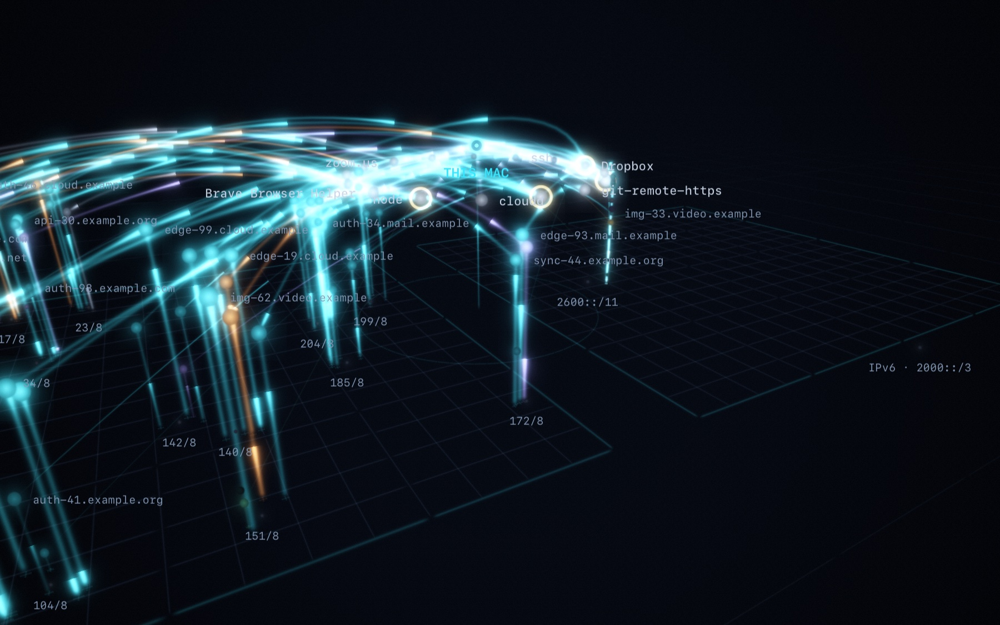
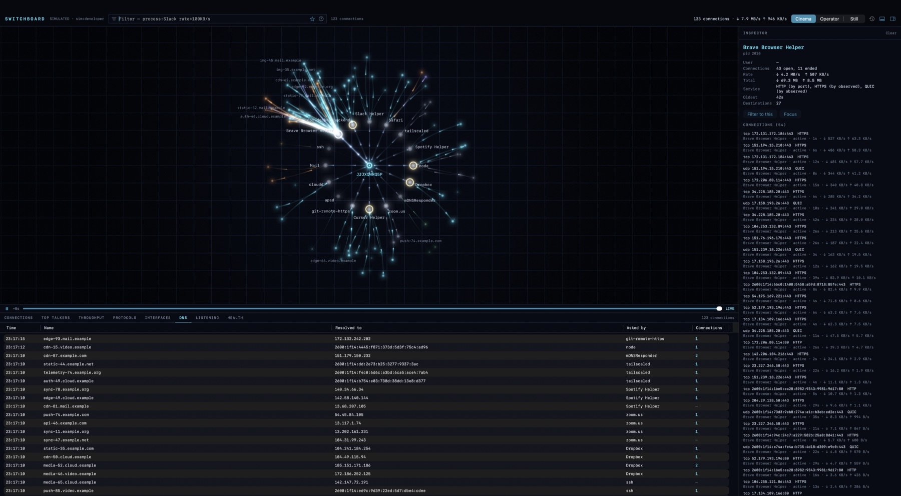
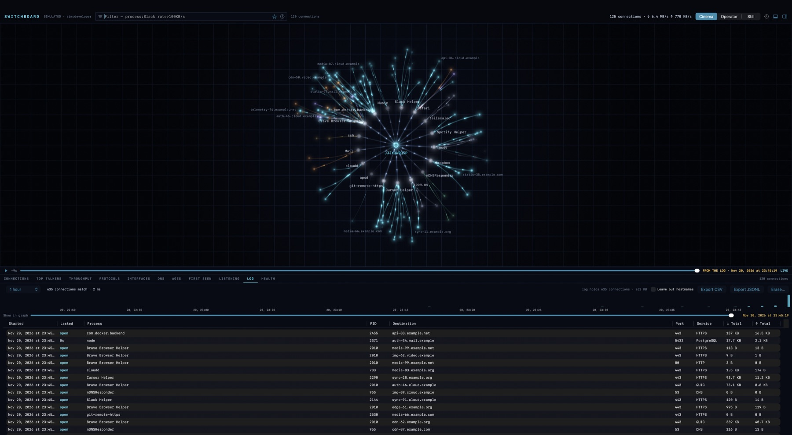
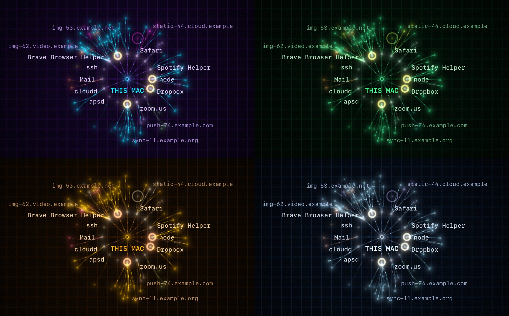

Network monitor for macOS · free and open source
See every connection your Mac makes.
Switchboard draws a live picture of the network on your Mac: which program is talking, to whom, how much, and for how long. It has six ways to look at it, a filter language, a timeline you can drag back, and a log you can search. It watches and never blocks, and it sends nothing anywhere.
curl -fsSL https://github.com/robert-mcdermott/switchboard/releases/latest/download/install.sh | bashPaste it into Terminal. Version 0.1.1, a beta, for Macs with Apple silicon on macOS 15 or later. The installer checks the download against the release's checksum and asks before anything that needs your password.

Every connection, by program
Process, account, remote address and port, bytes and rate each way, age, TCP state, and round-trip time, live.
Names, places, owners
Hostnames from the DNS answers and TLS handshakes it sees, and the country, city, and network owner of each destination.
Who signed it
Unsigned and tampered programs get a red ring. Destinations this Mac has never talked to before are marked and listed.
Nothing leaves your Mac
No telemetry, no update checks, no crash reports, and no packet contents kept. It goes online only when you ask.
Six layouts
Six ways to look at the same traffic
Press 1 to 6 to switch. Whatever you have selected stays selected, so you can follow one program from one picture to the next. The layouts →





Full mode
Names, not just numbers
On its own, Switchboard needs no password and sees every connection your account makes. Add its small collector, which runs as root, and it sees every account's connections and reads hostnames from DNS answers and TLS handshakes. The Health tab installs it, and removes it again.

Cyberspace
The internet as a place you can learn
Addresses run along a Hilbert curve, so every block of addresses is a block of floor and the same address is always in the same place. Cloud providers become districts you recognise. Each destination is a tower as tall as the bytes it has carried and as bright as its rate. Drag to orbit, and fly with W A S D.
History
Drag back in time
The timeline replays the last fifteen minutes in the graph, or up to an hour. Older traffic is in a SQLite log on your Mac that you search with the same filter, replay in the graph, and export as CSV or JSON lines.

Filtering
One filter for everything
The same language narrows the graph, the tables, and the log. Values understand units, wildcards, and networks, and terms combine with AND, OR, NOT, and brackets.
process:Slack rate_out>100KB/s
user:root service:SSH
r_port:443 NOT host:*.apple.com
age>1h bytes<10KB
class:public country!=US signing=unsigned
remote:10.0.0.0/8 OR tag:officeOn a wall
Made to be watched
Kiosk mode shows nothing but the graph and keeps the display awake. Six colour themes include one whose hues stay distinct with the common colour-vision deficiencies. A saved workspace starts a wall display in one command.

What it does not do
- It never blocks, changes, or injects anything. It watches, and that is all.
- It sends nothing anywhere. No telemetry, no update checks, no crash reports.
- It keeps no packet contents. Only who talked to whom, how much, and when.
- It goes online only when you ask: to download the free location databases, and for reverse DNS lookups if you turn them on.